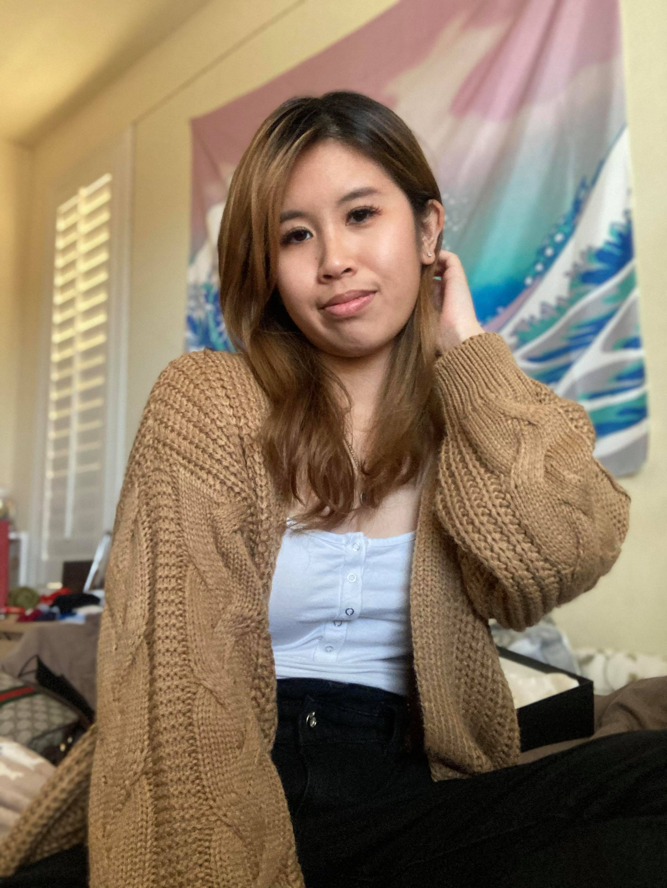

W
E
L
C
O
M
E
T
O
M
Y
P
A
G
E
!

Catherine Nguyen
Computer Science Major | San Jose State University | Assumed Graduation Year: 2022
Hello, I am Catherine Nguyen, and I am currently a junior at San Jose State University.
I am a Computer Science major with an interest in UX/UI Design and Web Development.
I am also open to summer internships, so feel free to message me through LinkedIn.
You can also check out my projects and connect with me on LinkedIn or GitHub!
The reason that I decided to pursue this career path is because our world will continue to depend on technology as it develops.
The more advanced technology becomes, the more difficult it may be to use.
Therefore, being part of the creative process, I want to be able to design applications that are easy to use for all types of users.
Once again, welcome to my page and I hope you enjoy your stay!